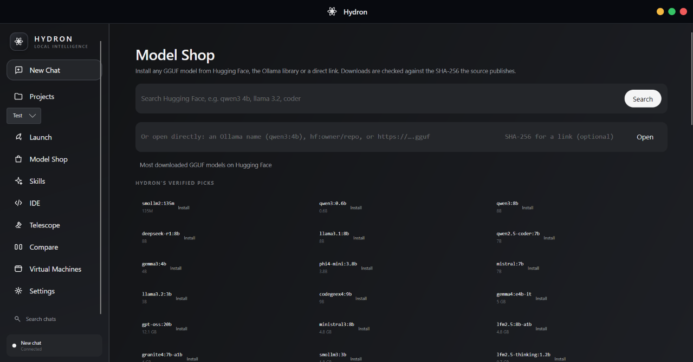
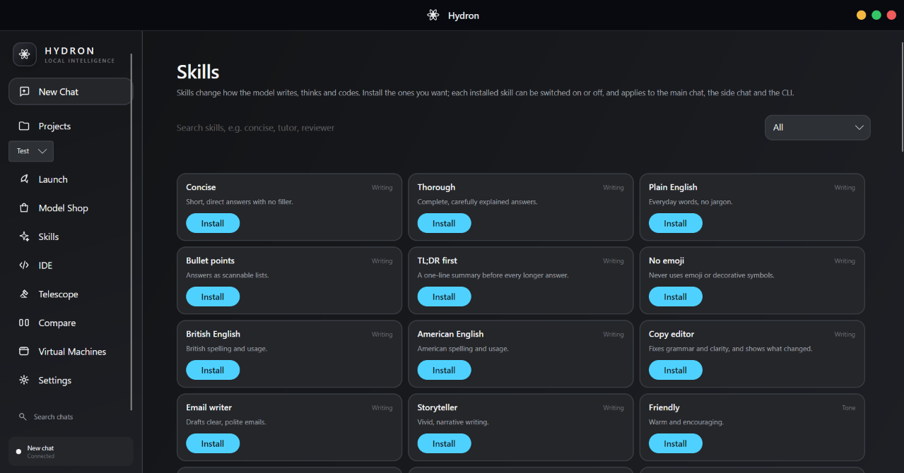

Run models on your PC
Download and use supported models locally. No cloud subscription is needed for local conversations.
Hydron brings local model chat, supported coding agents, model management, and project tools into one Windows application.

Chat with a local model or a connected coding agent.
The essentials of a local AI workflow, designed to work together.
Download and use supported models locally. No cloud subscription is needed for local conversations.
Choose a project folder, search its files, edit code, and see live output beside your work.
Install any GGUF model from Hugging Face, the Ollama library or a direct link, verified against its published SHA-256.
Hydron finds supported agents installed on your PC and gives you one place to open and use them.
Install skills that change how the model writes, thinks and codes — concise, tutor, reviewer and more, with new ones on the way.
Conversations stay on your computer and remember which model or agent you selected.
Search Hugging Face straight from Hydron, or open an Ollama name, an hf:owner/repo reference or a direct .gguf link. Not sure where to start? Hydron's verified picks cover everything from tiny to capable.

Skills change how the model writes, thinks and codes. There are 62 to choose from today, with more to come — from Concise and Plain English to Copy editor, Tutor and Reviewer.

Open the folder you choose and work beside the AI tools using it. Hydron calls the language toolchains already installed on your PC.

Hydron detects supported coding agents installed on your PC, including Codex, Claude Code, Hermes, OpenClaw, OpenCode, and Copilot CLI.

Type hydron in any shell and tell it what to work on. It runs on a local model or an agent such as OpenCode, and asks for a change the way you'd ask a teammate.
@ attaches a file (Tab completes the path), ! runs a shell command/ to see every command
Install, manage, and switch between supported local models without leaving Hydron.
| Model | Provider | Size · focus |
|---|---|---|
| Gemma 3 | 4B · general | |
| Phi-4 Mini | Microsoft | 3.8B · compact |
| Llama 3.2 | Meta | 3B · general |
| Mistral 7B | Mistral AI | 7B · instruct |
| DeepSeek R1 | DeepSeek | 8B · reasoning |
| CodeGeeX4 | Z.ai | 9B · coding |
| SmolLM2 | Hugging Face | 135M · lightweight |
| Qwen 3 / Coder | Alibaba | 0.6B–8B · general, coding |
Larger models need more memory, storage, and processing power.
Your CPU, GPU, available memory, and model size all affect response speed.
If you are unsure, begin with a compact model and move up gradually.
Choose a preset or tune the workspace yourself. Hydron saves the appearance, layout, and model behaviour you select.
The response, code, active model, and follow-up context stay together in the same conversation.
Graphite, Diamond, Aurora, Sunset, Nebula, Arctic, Ember, Midnight, Forest, and Monochrome.
Move navigation, resize the sidebar and tabs, and choose the density that suits your display.
Set a system prompt, temperature, context length, and maximum response size for local models.
Export your setup as a theme file, import it elsewhere, or reset to the default.
v0.8.1 alpha · Windows 10 & 11 (x64) · App, CLI, runtime, and local model engine in one installer.